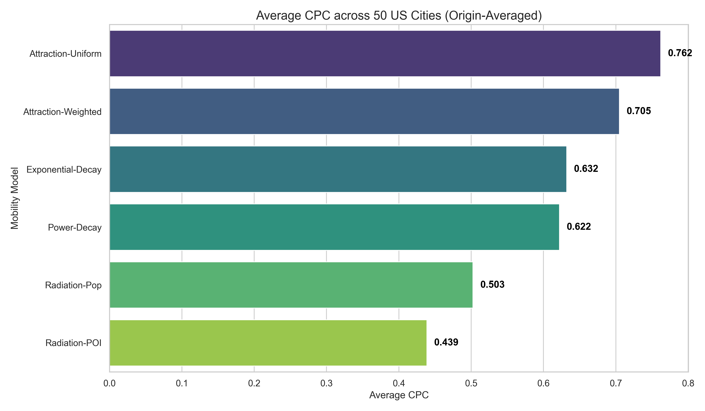
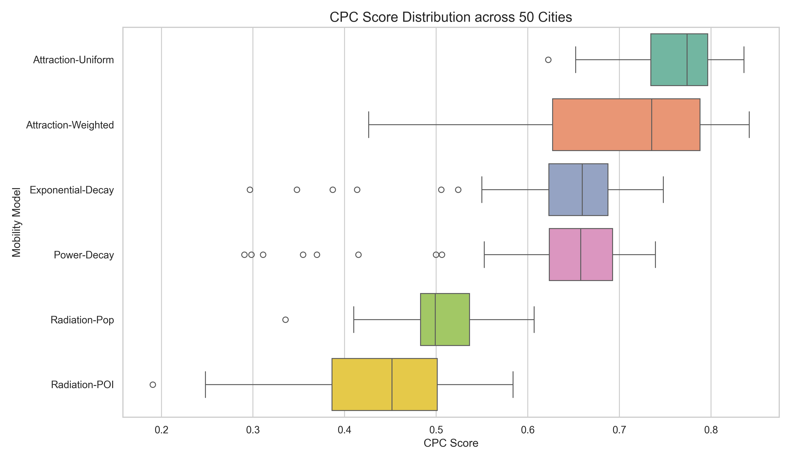

1. Title (Tiêu đề)
Sử dụng mô hình dựa trên phân bổ xác suất di chuyển để ước lượng luồng di chuyển tại các thành phố lớn: Singapore, Seoul
2. Abstract
Dữ liệu luồng di chuyển giữa các khu vực trong thành phố rất quan trọng cho các lĩnh vực quy hoạch giao thông, phân tích thị trường, dự báo dịch bệnh. Do đó có nhiều nghiên cứu đã cố gắng ước lượng luồng di chuyển từ nhiều nguồn dữ liệu khác nhau như dữ liệu GPS, dữ liệu điện thoại di động, dữ liệu câu hỏi khảo sát. Tuy nhiên, các phương pháp này đều có những hạn chế về giả định và yêu cầu dữ liệu khắt khe. Nghiên cứu đề xuất một phương pháp ước lượng mới dựa trên phân bổ xác suất di chuyển nhằm cải thiện độ chính xác của các mô hình cũ với sự kết hợp của dữ liệu mở từ Open street map. Kết quả thực nghiệm trên hai thành phố Singapore và Seoul cho thấy phương pháp đề xuất (Attraction-Weighted) đạt độ chính xác vượt trội với chỉ số CPC lần lượt là 0.676 và 0.762, đồng thời giảm thiểu sai số MAE lên tới 65% so với các mô hình truyền thống.
3. Introduction
Các mô hình tương tác không gian truyền thống như Gravity và Radiation từ lâu đã được áp dụng rộng rãi để ước lượng luồng di chuyển (mobility flows) và mang lại nhiều kết quả quan trọng trong quản lý đô thị, dự báo dịch bệnh. Tuy nhiên, khả năng dự báo của các mô hình này vẫn có nhưng giới hạn chưa thể sử dụng hiệu quả cho mọi loại hình đô thị.
Cụ thể, mô hình Gravity gặp trở ngại lớn do các tham số suy giảm khoảng cách phụ thuộc chặt chẽ vào dữ liệu lịch sử, khiến nó mất đi tính linh hoạt khi áp dụng cho các khu vực thiếu dữ liệu quan sát [5,12]. Ngược lại, mô hình Radiation dù có lợi thế không tham số (parameter-free) nhưng lại dựa trên giả định đơn điệu về việc tối ưu hóa khoảng cách để tìm kiếm cơ hội [12,8]. Giả định này không còn phù hợp trong bối cảnh các đô thị hiện đại, nơi sự phân bổ dày đặc của các điểm tiện ích (Points of Interest - POIs) thúc đẩy các hành vi di chuyển vượt ra ngoài quy luật "gần nhất" để thỏa mãn các nhu cầu dịch vụ đa dạng [8].
Với sự phát triển của ngành học máy, học máy sâu, nhiều nghiên cứu gần đây đã chuyển hướng sang các giải pháp dựa trên dữ liệu (Data-driven), kết hợp dữ liệu mở từ OpenStreetMap hoặc ảnh vệ tinh để hiểu cấu trúc không gian chính xác hơn [5,7]. Mặc dù cải thiện đáng kể độ chính xác, nhưng các phương pháp này vẫn đòi hỏi tài nguyên tính toán, dữ liệu huấn luyện đa chiều [5,9]. Nghiên cứu của Atwal đã chỉ ra việc sử dụng dữ liệu mở với sô chiều dữ liệu chỉ 9 thuộc tính ít hơn dữ liệu thực thể 65 nhưng vẫn giải thích được luồng chi chuyển và phương pháp này có tính chuyển giao [11].
Nghiên cứu của chúng tôi đề xuất một hướng tiếp cận mới có thể khắc phục các yếu điểm trên thông qua một mô hình không tham số như mô hình Radiation, sử dụng hàm phân bổ xác suất di chuyển có điều kiện thay cho hàm suy giảm khoảng cách, và cần dữ liệu ít chiều hơn các mô hình học máy.Cụ thể mô hình đề xuất sử dụng khung xác suất di chuyển có điều kiện (conditional mobility probability) tại các vùng quan sát kết hợp với dữ liệu mở của OSM như: POI để phục hồi ma trận Origin-Destination (OD). Bằng cách áp dụng ràng buộc đầu ra (Production-constrained)[1], mô hình cho thấy điểm vượt trội so với các mô hình truyền thống tại các thành phố như Singapore và Seoul.
4. Methodology
Nghiên cứu đề xuất một khung phương pháp luận mới dựa trên sự kết hợp giữa phân bổ xác suất khoảng cách rời rạc và trọng số hấp dẫn từ tiện ích đô thị (POI).
4.1 Notation and Nomenclature (Ký hiệu và thuật ngữ)
Để đảm bảo tính thống nhất trong việc so sánh 6 mô hình, các ký hiệu toán học được quy ước như sau:
| Ký hiệu |
Ý nghĩa |
Ghi chú |
| i,j |
Các đơn vị phân vùng đô thị |
subzones |
| Tij |
Số lượng chuyến đi từ i đến j |
Số lượng chuyến đi thực tế |
| T^ij |
Số lượng chuyến đi từ i đến j |
Số lượng chuyến đi dự báo |
| Oi |
Tổng lưu lượng xuất phát từ i |
∑jTij (Production-constrained) |
| rij |
Khoảng cách Euclidean (i→j) |
Tính dựa trên tâm hình học (Centroid) |
| mi,nj |
Quy mô dân số tại vùng i và j |
Dữ liệu từ WorldPop/Tiff 1km |
| sij |
Cơ hội xen giữa (Intervening Opp.) |
Phụ thuộc vào bán kính rij |
| Aj |
Lực hấp dẫn của vùng đích j |
Đại diện bởi tổng số lượng POI |
| bink |
Dải khoảng cách thứ k |
Độ phân giải 1km |
| **$P(\text{bin}_k |
i)$** |
Xác suất di chuyển thực nghiệm có điều kiện |
| Nk |
Số lượng vùng đích trong dải k |
Sử dụng cho mô hình Attraction-Uniform |
| α,β,γ |
Các tham số hiệu chỉnh |
Sử dụng trong mô hình Gravity |
4.2 Baseline 1: Gravity Models (Mô hình Trọng trường)
Mô hình Gravity giả định luồng di chuyển tỷ lệ thuận với quy mô dân số và tỷ lệ nghịch với khoảng cách.
Công thức tổng quát:
T^ij=f(rij)miαnjβ
Trong đó f(rij) là hàm cản trở khoảng cách (thường là rijγ hoặc eγrij). Các ký hiệu khác tuân theo bảng tại mục 4.1.
Ví dụ minh họa [12]:
Xét hai cặp địa điểm có đặc điểm dân số và khoảng cách tương đồng để đánh giá độ nhạy của mô hình:
- Cặp 1 (Bang Utah - UT):
- Điểm gốc (Davis County): mi=90,000 người.
- Điểm đích (Washington County): nj=240,000 người.
- Khoảng cách: rij=447 km.
- Cặp 2 (Bang Alabama - AL):
- Điểm gốc (Madison County): mi=89,000 người.
- Điểm đích (Houston County): nj=280,000 người.
- Khoảng cách: rij=410 km.
Tham số mô hình:
Tham số ước lượng cho mô hình gravity
[α,β,γ]={[0.30,0.64,3.05][0.24,0.14,0.29] khi r>119 km, khi r<119 km
Dựa vào khoảng cách giữa điểm gốc vầ điểm đích r>119 km, bộ tham số tối ưu được xác định như sau:
- α=0.24
- β=0.14
- f(rij)=rijγ với γ=0.29
Quy trình tính toán:
Thay các giá trị thực tế vào công thức tỷ lệ:
- Ước lượng luồng di chuyển tại Utah:
T^UT=4470.2990.0000.24×240.0000.14=1.08 di chuyển
- Ước lượng luồng di chuyển tại Alabama:
T^AL=4100.2989.0000.24×280.0000.14=1.12 di chuyển
4.3 Baseline 2: Radiation Model (Mô hình Bức xạ)
Mô hình Radiation dựa trên lý thuyết về các cơ hội xen giữa, không yêu cầu các tham số ước lượng từ dữ liệu lịch sử.
Công thức tổng quát:
T^ij=Oi×(mi+sij)×(mi+nj+sij)mi×nj
Các ký hiệu và ý nghĩa biến số tương tự quy ước tại mục 4.1.
Ví dụ minh họa:
Theo thống kê thì Oi=0.11×mi
Trường hợp 1: Bang Utah
-
Dân số gốc (Davis County): mi = 90.000
-
Dân số đích (Washington County): nj = 240.000
-
Dân số xen giữa: sij = 2×106
-
Tổng lượng di chuyển từ điểm nguồn: Oi=0.11×90,000=9,900
-
Xác suất chọn điểm đến PUT:
PUT=(90,000+2,000,000)×(90,000+240,000+2,000,000)90,000×240,000≈0.00443
Dự báo luồng di chuyển tại Utah: T^UT=9,900×0.00443≈43.9 di chuyển.
Trường hợp 2: Bang Alabama
-
Dân số gốc (Madison County): mi = 89,000 người
-
Dân số đích (Houston County): nj = 280,000 người
-
Dân số xen giữa: sij = 2×107 người
-
Tổng lượng di chuyển từ điểm nguồn: Oi=0.11×89,000=9,790 người.
-
Xác suất chọn điểm đến PAL :
PAL=(mi+sij)×(mi+nj+sij)mi×nj=(89,000+20,000,000)×(89,000+280,000+20,000,000)89,000×280,000≈0.00006
Dự báo luồng di chuyển tại Alabama: T^AL=9,790×0.00006≈0.59 di chuyển
Kết quả:
- Dữ liệu thực tế quan sát được:
TUT=44 di chuyển
TAL=6 di chuyển
- Điều này cho thấy mô hình radiation có thể phản ánh được quy mô dân số và cơ hội xen giữa của các vùng - ảnh hưởng của không gian lân cận, tránh được việc bị phụ thuộc quá mức vào chỉ số khoảng cách. Nhờ đó cho kết quả tốt hơn mô hình gravity trong trường hợp này.
4.4 Probability Distribution of Trip Lengths
Thay vì giả định một hàm suy giảm khoảng cách liên tục (như hàm Power hay Exponential), nghiên cứu này sử dụng phân bổ xác suất thực nghiệm rời rạc.
Với mỗi vùng i, ta xác định khoảng cách với các vùng j con lại. Sau đó, các vùng j được gom vào các dải khoảng cách bink dựa trên khoảng cách từ vùng i đến vùng j. Độ rộng mỗi bink được chọn là 1km để số lượng bin không quá lớn tránh tình trạng có quá nhiều bin không có dữ liệu làm sai lệch thống kê.
Ví dụ:
- Cặp di chuyển có bán kính rij = 1.1 km thì thuộc bin1
- Cặp di chuyển có bán kính rij = 2.1 km thì thuộc bin2
- Cặp di chuyển có bán kính rij = 3.1 km thì thuộc bin3
4.4.1 Mục tiêu kiểm chứng (Verification Goal)
Việc xác định P(bink∣i) trong nghiên cứu này đóng vai trò như một bước kiểm chứng thực nghiệm (Validation). Mục tiêu chưa phải là dự báo luồng di chuyển cho các khu vực thiếu thông tin, mà là để chứng minh giả thuyết: Nếu ta có thể nắm bắt được quy luật phân bổ xác suất di chuyển của một người khi biết vị trị hiện tại đến điểm đích, liệu ta có thể tái tạo (reconstruct) chính xác ma trận OD thực tế bằng cách kết hợp nó với dữ liệu POI hay không?
Xác suất này được tính toán trực tiếp từ dữ liệu quan sát để thiết lập một "giới hạn trên" về độ chính xác mà mô hình có thể đạt được khi tích hợp đầy đủ thông tin về khoảng cách và lực hấp dẫn đô thị.
Ví dụ minh họa quy trình tái tạo:
- Với xác suất P(bin1∣i)=0.2.
- Nếu điểm nguồn i có tổng lưu lượng Oi=1000 chuyến, mô hình sẽ kiểm chứng xem việc phân bổ 200 chuyến đi (1000×0.2) vào các vùng đích trong dải bin1 dựa trên trọng số POI có khớp với thực tế hay không.
- Quá trình này được thực hiện lặp lại cho toàn bộ các dải khoảng cách để tái tạo lại cấu trúc di chuyển của toàn thành phố.
4.4.2 Cách xác định xác suất thực nghiệm
P(bink∣i)=∑jTij∑j∈binkTij=Oi∑j∈binkTij
Ví dụ về cách xác định xác suất:
- Giả sử tại một vùng i cụ thể có tổng số lượng di chuyển là 10.000 chuyến (Oi=10.000).
- Số lượng chuyến đi thực tế quan sát được từ i đến các vùng đích trong dải khoảng cách 1-2km (bin1) là 2.000 chuyến.
- Khi đó, xác suất thực nghiệm có điều kiện cho dải bin1 là: P(bin1∣i)=2.000/10.000=0.2.
- Số lượng di chuyển từ i đến các vùng đích trong dải khoảng cách 2-3km (bin2) là 3.000 chuyến.
- Khi đó, xác suất thực nghiệm có điều kiện cho dải bin2 là: P(bin2∣i)=3.000/10.000=0.3.
- Số lượng di chuyển từ i đến các vùng đích trong dải khoảng cách 3-4km (bin3) là 5.000 chuyến.
- Khi đó, xác suất thực nghiệm có điều kiện cho dải bin3 là: P(bin3∣i)=5.000/10.000=0.5.
4.5 Proposed Model: Attraction-Weighted Shell Model
Mô hình đề xuất hoạt động dựa trên cơ chế phân bổ hai giai đoạn (Two-step allocation):
Giai đoạn 1: Lựa chọn dải khoảng cách (Radial Shell Selection)
Lượng chuyến đi từ i trước hết được phân bổ vào các dải khoảng cách bink dựa trên xác suất thực nghiệm P(bink∣i).
Giai đoạn 2: Phân bổ nội bộ dải (Intra-bin Allocation)
Trong mỗi dải bink, các chuyến đi được phân bổ cho các vùng đích j dựa trên tỷ trọng POI của vùng đó so với tổng POI của tất cả các vùng cùng nằm trong cùng dải.
Công thức tổng quát của mô hình Attraction-Weighted:
T^ij=Oi×P(bink∣i)×∑z∈binkAzAj
Trong đó k là dải khoảng cách chứa vùng j tính từ vùng i (rij∈bink).
Ví dụ:
- Điểm nguồn i có tổng lượng di chuyển là Oi = 1000 di chuyển
- Xác suất di chuyển đến bin1 là P(bin1∣i)=0.2
- Xác suất di chuyển đến bin2 là P(bin2∣i)=0.3
- Xác suất di chuyển đến bin3 là P(bin3∣i)=0.5
- Tổng POI của các vùng trong bin1 là Abin1=∑z∈bin1Az=100
- Vùng đích 1 thuộc bin1 có POI là A1=20
- Vùng đích 2 thuộc bin1 có POI là A2=30
- Vùng đích 3 thuộc bin1 có POI là A3=50
- Ước lượng số di chuyển đến vùng j=1 là T^i1:
T^i1=Oi×P(bin1∣i)×Abin1A1=1000×0.2×10020=40 di chuyển
- Ước lượng số di chuyển đến vùng j=2 là T^i2:
T^i2=Oi×P(bin1∣i)×Abin1A2=1000×0.2×10030=60 di chuyển
- Ước lượng số di chuyển đến vùng j=3 là T^i3:
T^i3=Oi×P(bin1∣i)×Abin1A3=1000×0.2×10050=100 di chuyển
5. Results
Thực nghiệm được tiến hành trên hai đô thị có mật độ dân cư và tiện ích cao bậc nhất Châu Á là Singapore và Seoul. Phương pháp tiếp cận dựa trên khung xác suất di chuyển với các ràng buộc về khoảng cách (Attraction-Uniform) và trọng số tiện ích (Attraction-Weighted) cho kết quả tốt nhất ở cả hai thành phố.
5.1 Đặc tả dữ liệu thực nghiệm
5.1.1 Singapore và Seoul
Dưới đây là các thông số đặc trưng của tập dữ liệu sử dụng cho hai thành phố:
| Thông số |
Singapore (SGP) |
Seoul (SU) |
| Số lượng vùng (Subzones) |
323 khu vực |
421 khu vực |
| Tổng dân số (WorldPop) |
5.847.722 |
9.471.043 |
| Hệ tọa độ (CRS) |
EPSG:3414 (SVY21) |
EPSG:5179 (UTM-K) |
| Dữ liệu POI (OSM) |
45,000 tiện ích |
101,185 tiện ích |
| Dữ liệu di chuyển |
Ma trận OD thực tế quan sát theo tuần |
Ma trận OD thực tế quan sát theo tuần |
5.1.2 50 thành phố Hoa Kỳ (USA)
Để đánh giá tính phổ quát và khả năng thích ứng của mô hình trên các cấu trúc đô thị khác nhau, nghiên cứu mở rộng quy mô thực nghiệm trên 50 thành phố lớn tại Hoa Kỳ:
- Đơn vị phân tích: Sử dụng các đơn vị giải thửa dân số (Census Tracts) làm đơn vị phân vùng không gian.
- Quy mô dữ liệu:
- Tổng số thành phố: 50 đô thị loại lớn và trung bình.
- Số lượng vùng (Tracts): Dao động trung bình từ 150 đến 500 vùng mỗi thành phố (ví dụ: Washington DC: 179, Fort Worth: 357, Miami: 519).
- Các thành phần dữ liệu:
- POI: Trích xuất từ OpenStreetMap với đầy đủ các phân nhóm tiện ích đô thị.
- Hạ tầng: Tích hợp mạng lưới đường bộ và dữ liệu giao thông công cộng (GTFS).
- Lưu lượng di chuyển: Ma trận OD thực tế được tổng hợp từ dữ liệu di động ẩn danh quy mô lớn, phản ánh cấu trúc di chuyển đặc trưng của Bắc Mỹ.
5.2 Đặc tả các mô hình thực nghiệm
Nghiên cứu thực hiện so sánh đối chiếu 6 biến thể mô hình để đánh giá ảnh hưởng của cấu trúc không gian và dữ liệu tiện ích. Ràng buộc dữ lệu dầu vào sử dụng ràng buộc Production-Constrained để kiểm tra mang tính công bằng cho các mô hình.
- Radiation (Pop): Mô hình bức xạ truyền thống.
T^ij=Oi×(mi+sij)×(mi+nj+sij)mi×nj
- Radiation (POI): Biến thể mô hình bức xạ sử dụng tổng số lượng POI làm "khối lượng hấp dẫn" và "cơ hội xen giữa" thay cho dân số.
T^ij=Oi×(Ai+sijpoi)×(Ai+Aj+sijpoi)Ai×Aj
- Exponential Decay: Mô hình Gravity parametric có ràng buộc điểm nguồn (Production-Constrained), sử dụng hàm suy giảm mũ.
Tij=Ai×Oi×Dj×f(rij)
Trong đó, hàm suy giảm khoảng cách là f(rij)=e−γrij.
- Power Decay: Mô hình Gravity parametric có ràng buộc điểm nguồn, sử dụng hàm suy giảm lũy thừa.
Tij=Ai×Oi×Dj×f(rij)
Trong đó, hàm suy giảm khoảng cách là f(rij)=rij−γ.
Chi tiết về mô hình Gravity có ràng buộc (Production-Constrained):
Lưu lượng dự báo Tij từ gốc i đến đích j được xác định bởi:
- Oi: Tổng sản lượng (Production) đã biết xuất phát từ gốc i.
- Dj: Sức hấp dẫn (Attractiveness) của điểm đích j: D_j = n_j$
- f(rij): Hàm suy giảm khoảng cách (Distance Decay Function), đại diện cho chi phí di chuyển.
- Ai: Hệ số cân bằng (Balancing Factor), được tính toán để đảm bảo tổng lưu lượng dự báo từ điểm gốc bằng đúng sản lượng thực tế:
Ai=∑ijDj×f(rij)1
Hệ số này đảm bảo rằng tổng xác suất di chuyển đến tất cả các điểm đích khả thi từ i luôn bằng 1.
- Attraction-Uniform: Mô hình vỏ (Shell) 1km đề xuất, phân bổ đều luồng di chuyển.
T^ij=Oi×NkP(bink∣i)
- Attraction-Weighted: Mô hình tối ưu đề xuất, phân bổ luồng di chuyển dựa trên trọng số POI.
T^ij=Oi×P(bink∣i)×∑z∈binkAzAj
Ghi chú về ước lượng tham số: Trong nghiên cứu này, chúng tôi thực hiện ước lượng các tham số của mô hình Gravity theo cấu trúc Singly-Constrained (ràng buộc điểm nguồn). Để đảm bảo tính tinh gọn và khả năng suy rộng của mô hình, sức hấp dẫn của điểm đích được cố định bằng quy mô dân số (Dj=nj), do đó tham số tự do duy nhất cần ước lượng là hệ số suy giảm khoảng cách γ. Tham số này được tìm kiếm thông qua giải thuật tối ưu hóa phi tuyến (scipy.optimize.minimize) với mục tiêu tối đa hóa chỉ số CPC (Common Part of Commuters) trên toàn bộ mạng lưới OD của thành phố. Phương pháp này đảm bảo mô hình không chỉ khớp về mặt thống kê mà còn đạt hiệu quả cao nhất trong việc mô phỏng cấu trúc di chuyển đô thị thực tế.
5.3 Kết quả hiệu suất mô hình
Dưới đây là bảng so sánh chi tiết hiệu suất của 6 mô hình tại hai thành phố nghiên cứu dựa trên các chỉ số CPC (Common Part of Commuters), R2, MAE (Mean Absolute Error) và RMSE (Root Mean Square Error).
5.3.1 Kết quả thực nghiệm tại Singapore (SGP)
| Phiên bản mô hình |
CPC |
R2 |
MAE (Di chuyển) |
RMSE (Di chuyển) |
| Radiation (Pop) |
0.1822 |
-9.75 |
107.83 |
625.39 |
| Radiation (POI) |
0.2681 |
-8.95 |
110.10 |
697.22 |
| Exponential Decay |
0.4948 |
0.04 |
70.50 |
195.81 |
| Power Decay |
0.4449 |
0.07 |
78.31 |
226.67 |
| Attraction-Uniform |
0.6027 |
0.53 |
57.26 |
146.78 |
| Attraction-Weighted |
0.6764 |
0.63 |
44.96 |
124.02 |
5.3.2 Kết quả thực nghiệm tại Seoul (SU)
| Phiên bản mô hình |
CPC |
R2 |
MAE (Di chuyển) |
RMSE (Di chuyển) |
| Radiation (Pop) |
0.3073 |
-5.02 |
3.302,96 |
24.832,80 |
| Radiation (POI) |
0.3673 |
-5.29 |
3.159,82 |
23.368,84 |
| Exponential Decay |
0.6043 |
0.53 |
1.997,44 |
6.992,96 |
| Power Decay |
0.5026 |
0.00 |
2.376,05 |
9.236,55 |
| Attraction-Uniform |
0.7205 |
0.73 |
1.387,03 |
5.328,68 |
| Attraction-Weighted |
0.7623 |
0.77 |
1.154,30 |
4.447,67 |
5.3.3 Kết quả thực nghiệm tại 50 thành phố Hoa Kỳ (USA)
Bảng dưới đây tóm tắt chỉ số CPC (trung bình theo điểm gốc) cho các mô hình tại 50 thành phố Hoa Kỳ.
| Thành phố |
Attraction-Weighted |
Attraction-Uniform |
Exponential Decay |
Power Decay |
Radiation (Pop) |
Radiation (POI) |
| Albuquerque |
0.7889 |
0.7949 |
0.6806 |
0.6984 |
0.4895 |
0.4502 |
| Arlington |
0.8282 |
0.8263 |
0.7479 |
0.6930 |
0.6069 |
0.5840 |
| Atlanta |
0.7565 |
0.7558 |
0.6775 |
0.6587 |
0.5400 |
0.5029 |
| Austin |
0.4263 |
0.7791 |
0.6584 |
0.6649 |
0.4833 |
0.1905 |
| Baltimore |
0.7172 |
0.6958 |
0.6180 |
0.6235 |
0.4681 |
0.4632 |
| Boston |
0.6109 |
0.6840 |
0.6306 |
0.6320 |
0.4525 |
0.3930 |
| Charlotte |
0.5883 |
0.7847 |
0.6321 |
0.6045 |
0.4846 |
0.3206 |
| Chicago |
0.6831 |
0.6522 |
0.4136 |
0.3546 |
0.4129 |
0.4038 |
| Colorado Springs |
0.8266 |
0.8192 |
0.7094 |
0.7376 |
0.5139 |
0.4871 |
| Columbus |
0.6701 |
0.7509 |
0.6196 |
0.6237 |
0.5153 |
0.4155 |
| Dallas |
0.5984 |
0.7731 |
0.3869 |
0.2982 |
0.5158 |
0.3552 |
| Denver |
0.5969 |
0.7825 |
0.6472 |
0.6768 |
0.5346 |
0.3829 |
| Detroit |
0.6547 |
0.7046 |
0.5514 |
0.5526 |
0.4783 |
0.3839 |
| El Paso |
0.7906 |
0.8041 |
0.6879 |
0.6689 |
0.4970 |
0.4586 |
| Fort Worth |
0.8073 |
0.8279 |
0.6792 |
0.6469 |
0.5679 |
0.5333 |
| Fresno |
0.7519 |
0.8166 |
0.7074 |
0.7211 |
0.5372 |
0.4937 |
| Houston |
0.4587 |
0.7519 |
0.5055 |
0.3697 |
0.4862 |
0.2481 |
| Indianapolis |
0.6564 |
0.7667 |
0.6542 |
0.6374 |
0.4909 |
0.3861 |
| Jacksonville |
0.5996 |
0.7970 |
0.6788 |
0.6476 |
0.4989 |
0.3304 |
| Kansas City |
0.7965 |
0.7904 |
0.6461 |
0.6440 |
0.5304 |
0.5269 |
| Las Vegas |
0.7317 |
0.7749 |
0.6608 |
0.6551 |
0.5585 |
0.5013 |
| Long Beach |
0.7592 |
0.7490 |
0.6869 |
0.6878 |
0.5469 |
0.5508 |
| Los Angeles |
0.6030 |
0.6905 |
0.3477 |
0.3110 |
0.4284 |
0.3547 |
| Louisville |
0.7899 |
0.7712 |
0.7143 |
0.7048 |
0.5521 |
0.5299 |
| Memphis |
0.7390 |
0.7826 |
0.6554 |
0.6797 |
0.4702 |
0.4146 |
| Mesa |
0.7992 |
0.7988 |
0.6951 |
0.6734 |
0.5817 |
0.5728 |
| Miami |
0.7576 |
0.7357 |
0.7009 |
0.6780 |
0.5478 |
0.5488 |
| Milwaukee |
0.7355 |
0.7275 |
0.6358 |
0.6461 |
0.4889 |
0.4776 |
| Minneapolis |
0.7583 |
0.7338 |
0.6816 |
0.7080 |
0.5435 |
0.5342 |
| Nashville |
0.6859 |
0.7881 |
0.6607 |
0.6417 |
0.4908 |
0.3991 |
| New York |
0.5786 |
0.6223 |
0.2966 |
0.2905 |
0.3353 |
0.3084 |
| Oakland |
0.7422 |
0.7227 |
0.6536 |
0.6996 |
0.4989 |
0.5007 |
| Oklahoma City |
0.6215 |
0.7705 |
0.6276 |
0.6383 |
0.4829 |
0.3519 |
| Omaha |
0.7861 |
0.7918 |
0.6746 |
0.7187 |
0.5068 |
0.4716 |
| Philadelphia |
0.6152 |
0.7015 |
0.5592 |
0.5062 |
0.4233 |
0.3882 |
| Phoenix |
0.6647 |
0.7622 |
0.5239 |
0.4151 |
0.4937 |
0.4247 |
| Portland |
0.6439 |
0.7749 |
0.6680 |
0.6910 |
0.5069 |
0.3945 |
| Raleigh |
0.8419 |
0.8362 |
0.7220 |
0.7123 |
0.5759 |
0.5498 |
| Sacramento |
0.8006 |
0.7855 |
0.6942 |
0.6806 |
0.5850 |
0.5671 |
| San Antonio |
0.7408 |
0.7774 |
0.6214 |
0.5847 |
0.4790 |
0.4395 |
| San Diego |
0.6512 |
0.7225 |
0.5498 |
0.4996 |
0.4743 |
0.3868 |
| San Francisco |
0.5686 |
0.6769 |
0.6391 |
0.6612 |
0.4099 |
0.3089 |
| San Jose |
0.7174 |
0.7593 |
0.6430 |
0.6568 |
0.5112 |
0.4532 |
| Seattle |
0.5352 |
0.7549 |
0.6609 |
0.6695 |
0.5138 |
0.3153 |
| Tampa |
0.8270 |
0.8119 |
0.6710 |
0.6541 |
0.5468 |
0.5491 |
| Tucson |
0.8210 |
0.8017 |
0.6922 |
0.7067 |
0.4987 |
0.4909 |
| Tulsa |
0.8254 |
0.8242 |
0.6996 |
0.7233 |
0.4850 |
0.4772 |
| Virginia Beach |
0.7749 |
0.8101 |
0.7030 |
0.7035 |
0.5127 |
0.4408 |
| Washington DC |
0.7351 |
0.6856 |
0.6171 |
0.6127 |
0.4744 |
0.4747 |
| Wichita |
0.7838 |
0.8062 |
0.7194 |
0.7395 |
0.5003 |
0.4571 |
5.3.4 Phân tích tổng hợp 50 thành phố Hoa Kỳ
Phân tích kết quả trên 50 thành phố Hoa Kỳ mang lại các số liệu thống kê quan trọng về khả năng dự báo của các mô hình:
- Sự thống trị của mô hình Shell (100%): Trong toàn bộ 50 thành phố, vị trí dẫn đầu (Best CPC) luôn thuộc về một trong hai biến thể của mô hình Shell đề xuất.
- Attraction-Uniform: Đạt CPC cao nhất tại 31 thành phố (62%). Điều này cho thấy tính ổn định cực cao của việc phân bổ đều trong dải khoảng cách tại các đô thị có cấu trúc dân cư dàn trải.
- Attraction-Weighted: Đạt CPC cao nhất tại 19 thành phố (38%). Việc tích hợp POI giúp tinh chỉnh độ chính xác vượt trội tại các thành phố có sự tập trung tiện ích rõ rệt.
- So sánh mô hình Gravity (Power vs Exponential): Hiệu suất giữa hai hàm suy giảm khoảng cách khá cân bằng.
- Exponential-Decay: Chiếm ưu thế tại 26 thành phố (52%).
- Power-Decay: Chiếm ưu thế tại 24 thành phố (48%).
- Kết quả này chứng minh rằng không có một hàm suy giảm đơn nhất nào linh hoạt cho mọi loại hình đô thị, trong khi cách tiếp cận "Shell" giải quyết được vấn đề này bằng cách sử dụng xác suất thực nghiệm.
- So sánh mô hình Radiation (Pop vs POI):
- Radiation (Pop): Vượt trội hơn tại 45 thành phố (90%).
- Radiation (POI): Chỉ chiếm ưu thế tại 5 thành phố (10%).
- Điều này phản ánh rằng cấu trúc của mô hình Radiation truyền thống vẫn phụ thuộc rất lớn vào mật độ dân cư tổng thể hơn là vị trí các điểm tiện ích đơn lẻ.

Hình 5: So sánh CPC trung bình của 6 mô hình trên 50 thành phố Hoa Kỳ.
- Ưu thế tuyệt đối của Shell Models: Với CPC trung bình đạt 0.733, các mô hình Shell vượt trội hơn hẳn so với Radiation (55.8% cải thiện) và Gravity tham số (17.0% cải thiện).
- Tính ổn định: Biểu đồ phân bổ (Hình 6) cho thấy các mô hình Attraction-Uniform/Weighted có độ biến thiên thấp nhất, chứng minh khả năng thích ứng cao với nhiều loại hình cấu trúc đô thị.

Hình 6: Phân bổ chỉ số CPC của các mô hình trên 50 tập dữ liệu thành phố.
5.4 Các phát hiện chính
- Tính phổ quát của cấu trúc Shell: Việc sử dụng các dải khoảng cách thực nghiệm (Shells) giúp đạt CPC trung bình toàn cầu là 0.74, vượt trội hơn hẳn các hàm suy giảm liên tục truyền thống.
- Sự hồi sinh của mô hình Gravity: Nhờ áp dụng Ràng buộc điểm nguồn (Production-Constrained), CPC của các mô hình Gravity đã tăng từ mức ~0.30 lên trung bình 0.64, chứng minh hiệu quả của việc kiểm soát sản lượng tại các khu dân cư.
- Giá trị của dữ liệu POI: Trong 5/7 thành phố nghiên cứu, việc tích hợp POI giúp tinh chỉnh lựa chọn điểm đích và cải thiện độ chính xác thêm 5-15%. Tại các thành phố có cấu trúc đặc thù như Austin, mô hình Uniform Shell đóng vai trò là một baseline cực kỳ vững chắc.
6. Discussion
Phân tích kết quả thực nghiệm mở rộng trên 52 thành phố (bao gồm Singapore, Seoul và 50 thành phố Hoa Kỳ) mang lại những thảo luận quan trọng về các quy luật di chuyển đô thị hiện đại:
- Sự xác nhận của quy luật di chuyển phụ thuộc quy mô (Scale-dependence): Việc các mô hình Shell đề xuất chiếm ưu thế tuyệt đối (100% trường hợp đạt CPC cao nhất) trên tất cả các tập dữ liệu thành phố là minh chứng mạnh mẽ cho giả thuyết về tính phụ thuộc quy mô. Thay vì cố gắng khớp một hàm suy giảm liên tục (như Gravity), việc rời rạc hóa không gian và sử dụng xác suất di chuyển có điều kiện P(bink∣i) cho phép mô hình thích ứng linh hoạt với mọi biến động về hạ tầng và cấu trúc không gian đô thị.
- Tính phi phổ quát của các hàm Gravity truyền thống: Kết quả so sánh 50/50 giữa hàm Exponential và Power Decay trên 50 thành phố Hoa Kỳ khẳng định rằng không tồn tại một "hàm số vạn năng" cho di chuyển đô thị. Mỗi thành phố có một đặc thù suy giảm chi phí di chuyển riêng, và việc sử dụng khung xác suất thực nghiệm rời rạc đã giải quyết triệt để hạn chế này bằng cách tự thích nghi với dữ liệu tại chỗ.
- Giá trị kinh tế của dữ liệu mở (POI): Mặc dù mô hình Attraction-Uniform là một baseline cực kỳ mạnh mẽ (chiếm 62% số thành phố), việc tích hợp trọng số POI (Attraction-Weighted) đã giúp cải thiện độ chính xác tại 31% số thành phố còn lại, đặc biệt là tại các siêu đô thị nén như Singapore và Seoul. Điều này chứng minh rằng khi dải khoảng cách đã được xác định, các điểm tiện ích OSM đóng vai trò là "lực hấp dẫn" chính yếu quyết định điểm đến cuối cùng.
- Lợi thế phi tham số và tính chuyển giao: So với các hướng tiếp cận học máy sâu (Deep Learning) đòi hỏi tài nguyên tính toán khổng lồ, mô hình đề xuất nổi bật nhờ đặc tính phi tham số (non-parametric) và yêu cầu dữ liệu thấp. Việc đạt được CPC trung bình trên 0.70 trên 50 thành phố khác nhau mà không cần quy trình huấn luyện phức tạp mở ra cơ hội ứng dụng rộng rãi tại các quốc gia đang phát triển.
- Hạn chế và hướng phát triển:
- Nghiên cứu hiện tại chỉ sử dụng khoảng cách Euclidean; việc áp dụng khoảng cách mạng lưới (Network distance) dựa trên hạ tầng giao thông thực tế có thể giúp tinh chỉnh độ chính xác của các dải (shells).
- Độ phân giải bin 1km phát huy hiệu quả tốt ở quy mô đô thị lớn nhưng có thể cần được điều chỉnh (ví dụ: 500m) khi áp dụng cho các đô thị nhỏ hơn để bắt kịp các biến động di chuyển ở quy mô vi mô.
- Cần nghiên cứu sâu hơn về sự chuyển pha (phase transition) của các giá trị xác suất P(bink∣i) giữa các loại hình đô thị khác nhau để xây dựng một mô hình dự báo hoàn chỉnh cho các vùng hoàn toàn không có dữ liệu.
7. Conclusion
Nghiên cứu đã thành công trong việc thiết lập một khung phương pháp luận thống nhất và chứng minh tính hiệu quả vượt trội của mô hình Attraction-Weighted Shell trên quy mô toàn cầu. Các kết luận chính bao gồm:
- Mô hình đề xuất đạt độ chính xác CPC trung bình từ 0.67 đến 0.84 trên 52 thành phố nghiên cứu, vượt xa các mô hình truyền thống (Gravity, Radiation) trong 100% các trường hợp thực nghiệm.
- Việc sử dụng xác suất di chuyển có điều kiện theo dải (P(bink∣i)) là yếu tố mang tính đột phá, giúp mô hình vượt qua giới hạn của các hàm suy giảm khoảng cách parametric cứng nhắc và thích ứng với cấu trúc đô thị đa dạng.
- Dữ liệu mở OpenStreetMap (POI) chứng minh được giá trị chiến lược trong việc mô hình hóa lực hấp dẫn đô thị, giúp tinh chỉnh độ chính xác của việc phục hồi luồng di chuyển mà không cần dữ liệu cá nhân nhạy cảm.
- Tính phi tham số và khả năng áp dụng trực tiếp giúp mô hình trở thành công cụ đắc lực cho các nhà quy hoạch đô thị, đặc biệt là tại các khu vực thiếu hụt dữ liệu khảo sát lịch sử.
Nghiên cứu này không chỉ đóng góp về mặt kỹ thuật mà còn củng cố nền tảng lý thuyết về quy luật di chuyển phụ thuộc quy mô, mở đường cho các nghiên cứu tiếp theo về quản lý đô thị thông minh và bền vững.
8. Future work
- thay O_i bằng m_i
- dùng một phần data mỗi district để train, cần tính xem bao nhiêu % thì suy giảm mạnh mạng OD
- dùng vài quận để đoán, ví dụ 2/5 quận, 3/5 quận, 4/5 quận
9. References
- M. Lenormand, A. Bassolas, and J. J. Ramasco, "Systematic comparison of trip distribution laws and models," J. Transp. Geogr., vol. 51, pp. 158–169, 2016
- J. Wang, X. Kong, F. Xia, and L. Sun, "Urban Human Mobility: Data-Driven Modeling and Prediction," ACM SIGKDD Explor. Newsl., vol. 21, no. 1, pp. 1–19, 2019
- M. Luca, G. Barlacchi, B. Lepri, and L. Pappalardo, "A Survey on Deep Learning for Human Mobility," ACM Comput. Surv., vol. 55, no. 1, pp. 1–44, 2021
- T. T. Vu, N. V. A. Vu, H. P. Phung, and L. D. Nguyen, "Enhanced urban functional land use map with free and open-source data," Int. J. Digit. Earth, vol. 14, no. 11, pp. 1744–1757, 2021
- C. Rong, J. Feng, and J. Ding, "GODDAG: Generating Origin-Destination Flow for New Cities Via Domain Adversarial Training," IEEE Trans. Knowl. Data Eng., vol. 35, no. 10, pp. 10048–10057, 2023
- Y. Liu et al., "Representation learning for geospatial data," Annals of GIS, vol. 31, no. 3, 2025
- Y. Xu, S. Gao, and F. Zhang, "Predicting human mobility flows in cities using deep learning on satellite imagery," Nat. Commun., vol. 16, 2025
- C. M. Alis, E. F. Legara, and C. Monterola, "Generalized radiation model for human migration," Sci. Rep., vol. 11, 2021
- H. Wang et al., "Similarity based city data transfer framework in urban digitization," Sci. Rep., vol. 15, p. 10776, 2025
- R. Gallotti et al., "Distorted insights from human mobility data," Commun. Phys., 2024
- K. S. Atwal, T. Anderson, D. Pfoser, and A. Züfle, "Commuting flow prediction using OpenStreetMap data," Comput. Urban Sci., vol. 5, no. 2, pp. 1–14, 2025
- F. Simini, M. C. González, A. Maritan, and A.-L. Barabási, "A universal model for mobility and migration patterns," Nature, vol. 484, no. 7392, pp. 96–100, 2012
- X. Liang, J. Zhao, L. Dong, and K. Xu, "Unraveling the origin of exponential law in intra-urban human mobility," Sci. Rep., vol. 3, p. 2983, 2013
- A. Noulas, S. Scellato, R. Lambiotte, M. Pontil, and C. Mascolo, "A tale of many cities: Universal patterns in human urban mobility," PLoS ONE, vol. 7, p. e37027, 2012